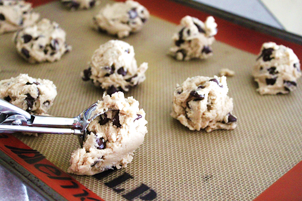

|
|
Instructions |
| Step 1 |
|
Cream together butter,white sugar, and brown sugar, until smooth. |
| Step 2 |
|
Beat in eggs one at a time, then stir in vanilla. |
| Step 3 |
|
Dissolve baking soda in hot water. Add to batter along with salt. |
| Step 4 |
|
Stir in flour and chocolate chips. |
| Step 5 |
 |
Drop Large Spoonfuls onto un-greased cookie sheet. |